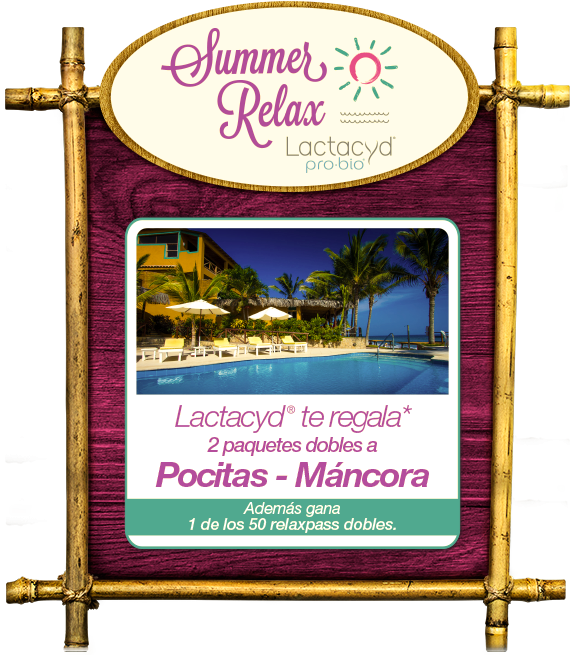

ESTE SITIO WEB ES SOLO PARA MUJERES DE PERÚ

El Grupo Sanofi además de estar comprometido ofrecer la más eficaz medicina de calidad para sus pacientes, también se compromete a mejorar su calidad de vida. Es por eso que ponemos a su servicio nuestro sistema de farmacovigilancia con el cual podrá reportar cualquier evento adverso producido por el consumo de nuestros medicamentos.
Son todas aquellas actividades relacionadas a la detección, evaluación, comprensión y prevención de los efectos adversos de los medicamentos o cualquier problema de salud relacionado a ellos.
Todo aquel signo síntoma que se presenta de manera inesperada posterior a la administración de un medicamento pudiendo estar relacionado o no, con este.
Si usted quiere reportar un evento adverso inesperado que ha presentado alguna persona tratada con uno de nuestros productos por favor comuníquese al siguiente correo electrónico: E-mail: Farmacovigilancia.peru@sanofi.coms o al teléfono 411-4710 anexo 4791. Un miembro de nuestro equipo de fármaco vigilancia podrá contactarse con usted para obtener mayor información.
¿Tienes duda sobre alguna enfermedad o algún medicamento? Estimado Usuario, tu inquietud puede ser atendida por el departamento de información Médica de SANOFI, por lo que te solicitamos te comuniques con el 411-4710. Anexo 4791
Esta página describe las instrucciones legales que rigen el uso de este sitio. Al consultar este sitio usted se acepta cumplirá sin reserva, los presentes términos y condiciones. Debido a que éstos pueden modificarse en algunas ocasiones y sin previo aviso, se recomienda su consulta de manera regular.
Este Sitio es propiedad de y está operado por sanofi-aventis del peru S.A (en adelante la “Compañía”), parte del Grupo Sanofi. La distribución y cada uno de los componentes, incluyendo las marcas registradas, logos y nombres de dominio que aparecen en “reto 21 dias Summer Relax ”y el URL del web www.siemprelactacyd.com.pe (en adelante el “Sitio”), están protegidos por las leyes vigentes en Propiedad Intelectual, y le pertenecen a la compañía francesa: SANOFI o a sus subsidiarias, o su uso ha sido objeto de una autorización.
Ningún componente del Sitio puede copiarse, reproducirse, alterarse, editarse, bajarse, transmitirse o distribuirse de ninguna manera, ni por ningún medio, ya sea total o parcialmente, sin el previo consentimiento por escrito de la Compañía, excepto para uso exclusivo de requisitos de prensa, sujetos al cumplimiento de derechos de propiedad intelectual y cualquier otro derecho de propiedad mencionado. Las únicas copias autorizadas deberán ser en su propia computadora personal para uso personal y no comerciales.
“DERECHOS DE AUTOR –2016. Sanofi-Aventis de PERU S.A. TODOS LOS DERECHOS RESERVADOS”.
Cualquier uso autorizado de los componentes que integren el sitio o se muestren en el mismo no debe distorsionarse, modificarse o alterarse de ninguna manera.
Sanofi o sus subsidiarias se reservan el derecho de ejercer acción legal contra cualquier violación de sus derechos de propiedad intelectual
Este sitio apoyará a los usuarios a conocer más sobre los productos de Lactacyd® y sumarse a la promoción de reto de 21 dias Summer Relax
La información, sobre todo financiera, publicada en el Sitio no debe ser considerada como una invitación a invertir. En ningún caso deberá ser interpretado como la prospección o como un ofrecimiento de público, tampoco esto es una oferta de suscribir, comprar o cambiar partes u otros valores en Sanofi y/o sus filiales afectadas. La Compañía hace énfasis al hecho de que la información incluida en el Sitio es actualizada con regularidad (si la información financiera es proporcionada on-line).
El Sitio puede ofrecer la opinión de expertos consultados en determinada rama relacionados con el contenido del Sitio, o extractos de artículos de periódico Tal información representa sólo las opiniones de los expertos respectivos o del periódico, cuyas opiniones son no necesariamente las de Grupo Sanofi. Tales expertos no son los empleados del Grupo Sanofi y no reciben ningún emolumento de SANOFI para el empleo de su opinión. la Compañía no es responsable de la exactitud o la entereza de ninguna información u opinión. Las opiniones de los expertos reflejan su visión personal y nunca debe interpretarse como la opinión o responsabilidad de la Compañía y/o SANOFI.
El Sitio también incluye información sobre salud, condición física, el campo médico y tratamientos médicos reservados exclusivamente para uso de seres humanos. Dicha información se publica en el Sitio únicamente con propósitos informativos y no es sustituto de los consejos proporcionados por su médico o especialista. No deberá usar la información contenida en el presente documento para diagnosticar cualquier enfermedad o problema físico, ni para recetar o utilizar cualquier medicamento presentado en el Sitio. El Sitio no está destinado a ser utilizado para informar respecto a problemas de salud, eventos adversos o quejas técnicas de productos, o hacer preguntas técnicas o médicas relativas a los productos de sanofi. En todas las circunstancias deberá consultar su médico.
Ni SANOFI ni cualquier otra compañía del Grupo Sanofi se hacen responsables del contenido del sitio de algún tercero que pueda ser accesado por este Sitio. No tenemos manera de controlar el contenido de los sitios de terceros que son totalmente independientes de la Compañía. Además, la existencia de un link entre el Sitio y el sitio del tercero, bajo ninguna circunstancia implica, de ninguna manera, que la Compañía aprueba el contenido de este sitio, y en particular el uso que se le pueda dar.
Adicionalmente, el usuario es responsable de tomar las precauciones necesarias para prevenir cualquier contaminación del Sitio, en particular por un virus de computadora “virus”, “Troyanos” o cualquier otro “parásito”.
Los sitios externos pueden contener hyperlinks que llevan al Sitio. Ningún hyperlink deberá instalarse sin el previo consentimiento por escrito de la Compañía.
En cualquier caso, la Compañía no es de ninguna manera responsable de la no disponibilidad de dichos sitios y la Compañía no revisa, aprueba, ni se hace responsable de cualquier contenido, publicidad, productos u otros componentes disponibles en o accesibles en estos sitios.
4.1 La Compañía no revelará a terceros, los datos personales que llegaren a ser proporcionados por los usuarios de las aplicaciones a través del site, que sólo se utilizará con el fin de generar una opción electrónica para el concurso de “reto de 21 dias Summer relax”
Los datos personales del consumidor, son proporcionados de manera libre, previa, expresa, voluntaria e inequívoca, conforme a lo dispuesto en la Ley 29733 sobre protección de Datos Personales. El Consumidor autoriza que los datos proporcionados puedan ser recopilados de manera oral, escrita o a través de cualquier medio de comunicación electrónica o convencional, a fin de integrarlos a su base de datos, cuyo uso es exclusivo para fines administrativos, estadísticos y de servicio al Consumidor.
4.2 Las aplicaciones no están destinadas para recibir información confidencial de sus usuarios. Consecuentemente, excepto los datos personales señalados anteriormente, cualquier información, sin importar su forma-documento, datos, preguntas, gráficos, sugerencias, comentario o cualquier otro- que sea enviado a través de las aplicaciones, bajo ninguna circunstancia se considerará confidencial.
Por lo tanto, el hecho de enviar cualquier información a través de las aplicaciones, otorga a la Compañía el derecho de usarla, reproducirla, publicarla, alterarla o enviarla, con el fin de atender la solicitud correspondiente.
Sanofi hace su esfuerzo para asegurar la información publicada en el Sitio es exacta y actualizada. Sanofi se reserva el derecho de corregir el contenido en cualquier momento y sin aviso previo. Sin embargo, Sanofi no puede garantizar que la información disponible en el Sitio sea exacta, correcta, actualizada o completa.
Consecuentemente, y exceptuando los daños causados por dolo o negligencia de Sanofi, ésta niega cualquier responsabilidad relacionada con:
• Cualquier imprecisión, error relativa a la información proporcionada en el Sitio.
• Cualquier daño que resulte de intrusión fraudulenta por una tercera parte que conlleve a la modificación de la información o componentes proporcionados en el Sitio.
• De manera más general, cualquier daño a la propiedad, directo o indirecto, sin importar su causa, origen, naturaleza o consecuencias, incluso cuando a la Compañía se le informó de la posibilidad de dicho daño, ya sea un resultado de (i) acceso o imposibilidad de accesar al Sitio, (ii) el uso del Sitio, incluyendo cualquier daño o virus que pueda infectar su computadora o cualquier otra propiedad y/o (iii) la credibilidad que se le dé a la información proveniente directa o indirectamente del Sitio.
Los componentes en el Sitio y en todos los demás sitios asociados se proporcionan “como están” sin ningún tipo de garantía, ya sea explícita o implícita. La Compañía no ofrece ningún tipo de garantía explícita o implícita sin limitación a su valor de mercado e idoneidad para un propósito particular.
Reconoce que (i) es técnicamente imposible que la Compañía proporcione el Sitio libre de errores y/o defectos, (ii) que los defectos pueden llevar a la indisponibilidad temporal del Sitio, y (iii) que la operación del Sitio puede verse afectada por eventos y/o circunstancias fuera del control de la Compañía, como por ejemplo, links de transmisión y telecomunicación entre la Compañía y usted y entre la Compañía y otros sistemas y redes.
La Compañía y/o sus distribuidores pueden, en cualquier momento, alterar o interrumpir, de manera temporal o permanente todo o parte del sitio con el fin de realizar trabajos de mantenimiento y/o realizar mejoras y/o cambios al Sitio. la Compañía no es responsable de cualquier alteración, suspensión o interrupción del Sitio.
La información incluida y publicada en el Sitio puede tener referencias directas o indirectas a productos, programas y servicios del Grupo Sanofi que no se han anunciado o no se encuentran disponibles en algunos países o regiones, o que pueden ofrecerse bajo el registro de un nombre de marca diferente, y que pueden sujetarse a diferentes regulaciones y términos que pueden diferir de acuerdo con el país. Dichas referencias no implican que el Grupo Sanofi quiera vender estos productos, programas o servicios en su país. Consulte el subsidiario local del Grupo Sanofi o su representante comercial del Grupo Sanofi para cualquier información sobre los productos, programas y servicios que están disponibles para usted.
El sitio y su contenido se rigen por las Leyes Del Peru y cualquier disputa relacionada será competencia de los Tribunales del Peru, ciudad de Lima
9.1 Editor del sitio
Sanofi-aventis del Peru S.A.
Ca. Los Sauces 374, piso 3 , torre roja
Todas las fotografías son propiedad de Sanofi-Aventis del Peru S.A.. adquiridas de Shutterstock Images LLC.
Publicis Asociados es la agencia encargada del diseño.
Todos los videos e imágenes son propiedad de Sanofi-Aventis del Peru S.A.
En cumplimiento a lo establecido en la Ley conforme a lo dispuesto en la Ley 29733 sobre protección de Datos Personales. (en los sucesivo la “Ley”), y su respectivo Reglamento, Sanofi-Aventis del Peru S.A., en adelante “Sanofi”, hace de su conocimiento el presente Aviso de Privacidad a fin de que conozca cómo se recabarán, usarán, almacenarán y, en general, tratarán sus datos personales. Para efectos del tratamiento de los datos personales que Usted divulgue a Sanofi, se considerará a Sanofi como “responsable” de sus Datos Personales, con domicilio en Calle los Sauces 374, piso 3 , Torre Roja y a la Empresa Publicis Asociados S.A.C. como “encargado” con domicilio en Calle los eucaliptos 245, san isidro. Dichas empresas a nombre de Sanofi, recabarán y resguardarán los datos personales que nos proporcionen en la página web www. siemprelactacyd.com.pe para fines de la campaña « 21 Días », así como para el envío de premios derivados de promociones y el envío de información publicitaria de la marca Lactacyd.
Datos personales recabados: Los datos personales que Sanofi pudiera tratar, es decir, obtener, usar, divulgar o almacenar serán los siguientes:
• Nombre completo
• Teléfono
• DNI
• Ciudad
• E-mail
Esta información será obtenida directamente de usted a través de un formulario con los datos mencionados.
Usos y finalidades de los datos personales: Los datos personales que nos proporcione, serán tratados de conformidad con el presente Aviso de Privacidad y lo establecido en la Ley 29733 sobre protección de Datos Personales, para lo aquí descrito:
• Envío de información de la marca.
• notificar sobre las ganadoras del premio de 21 dias Summer Relax
Sanofi podrá transferir sus datos personales y/o personales sensibles a terceros, nacionales o extranjeros que no actúen a nombre y por cuenta de Sanofi, sólo cuando dicha transferencia esté prevista y autorizada por la Ley, así como cuando sea necesario para cumplir con las finalidades descritas en este Aviso de Privacidad.
Medidas adoptadas para la protección de datos personales: Sanofi ha adoptado y mantiene las medidas de seguridad, administrativas, técnicas y físicas, necesarias para proteger los datos personales de los Individuos titulares de los datos personales contra daño, pérdida, alteración, destrucción o el uso, acceso o tratamiento no autorizados. Sanofi procura que las medidas de seguridad adoptadas sean las adecuadas para mantener correctamente resguardados sus datos personales.
Modificaciones al Aviso de Privacidad: Cualquier modificación a este Aviso de Privacidad le será informada oportunamente para que otorgue el debido consentimiento, y podrá consultarse en nuestra página de internet www. siemprelactacyd.com.pe
Usted puede revocar el consentimiento que haya otorgado a Sanofi para el tratamiento de sus datos personales. Sin embargo, es importante que tenga en cuenta que no en todos los casos podremos atender su solicitud o concluir el uso de forma inmediata, ya que es posible que por alguna obligación legal requiramos seguir tratando sus datos personales. Asimismo, usted deberá considerar que para ciertos fines, la revocación de su consentimiento implicará que no le podamos seguir prestando el servicio que nos solicitó, o la conclusión de su relación con nosotros
Por lo tanto, autorizo al de sanofi-aventis del Perú S.A. a recibir la información arriba descrita, la que se mantendrá la reserva de ley, y que será usada solo para fines estadísticos, de seguimiento de mi tratamiento médico y/o para servicios de información a mi Persona.
Esta autorización tendrá vigencia por el tiempo en que se encuentre activa la promoción, hasta el cierre de la misma.
Los autorizo de la misma manera, a contactarme vía telefónica, electrónica o por escrito para
Informarme sobre las actividades, eventos o información relevante, relacionados con mí
Participación en el reto de los 21 dias Summer Relax, asimismo autorizo a la Unidad de Farmacovigilancia de sanofi aventis a contactarme con el fin de recabar información sobre cualquier evento adverso que se pueda producir durante mi uso de producto, dicha información será manejada de manera confidencial.